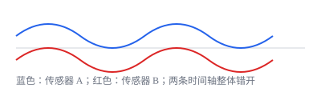

<script type="application/json" id="tb-manifest">
{
  "schema": "tb/1",
  "id": "L-SYNC-002",
  "title": "固定偏移、漂移与抖动",
  "module": "M01",
  "concepts": ["timestamp-basics", "clock-drift", "sensor-time-sync"],
  "target_level": "L2",
  "minutes": 20,
  "objectives": ["能解释三类同步误差的来源", "能根据现象选择测试方法"],
  "prerequisites": ["timestamp-basics"],
  "exercises": ["EX-SYNC-005", "EX-SYNC-006"],
  "resources": ["DOC-PTP", "DOC-ROS2-TIME"]
}
</script>
<article class="tb-lesson">
  <h1>固定偏移、漂移与抖动</h1>
  <section>
    <p>固定偏移通常来自时钟源不同或打点位置不同；漂移来自两个时钟频率不完全一致；抖动来自调度、传输或中断的短时不确定性。</p>
    <p>面试里常被追问：“你怎么判断是偏移还是漂移？”答案是看误差随时间的走势，而不是看单次差值。</p>
  </section>
  <figure>
    
    <figcaption>同一张图里看“整体错开”和“越走越开”。</figcaption>
  </figure>
  <div data-tb-exercise="EX-SYNC-005"></div>
  <div data-tb-exercise="EX-SYNC-006"></div>
</article>
